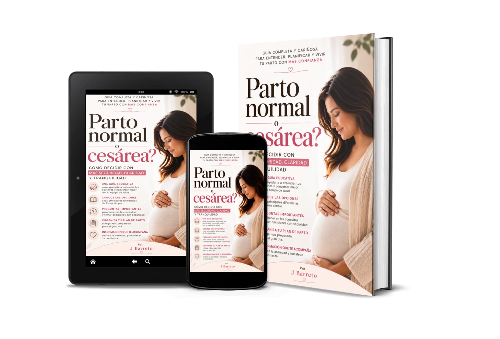

Conoce las opciones
Diferencias generales, dudas habituales y factores que importan.
Guía digital para el embarazo
¿Parto normal o cesárea? Un ebook educativo y cercano para embarazadas que quieren ordenar sus dudas, conocer las diferencias y prepararse para el nacimiento sin presiones.
PDF digital · Entrega por Hotmart · Garantía de 7 días
El enlace de compra se habilitará cuando esté conectado el checkout.

Una decisión que merece información
Entre opiniones de familiares, historias ajenas y términos médicos, puede ser difícil saber qué preguntar y qué tomar en cuenta.
Con información organizada, es más fácil llevar tus inquietudes a una conversación con quienes acompañan tu embarazo.
Un camino claro, paso a paso
Este ebook no elige la vía de parto por ti. Reúne explicaciones accesibles sobre ambas opciones, miedos frecuentes y aspectos que conviene revisar con tu equipo de salud. Después, te ayuda a transformar tus inquietudes en preguntas y preferencias concretas.
Diferencias generales, dudas habituales y factores que importan.
Una lista práctica para aprovechar mejor la consulta.
Registra preferencias y contempla cambios posibles.
Compra disponible al conectar Hotmart.
Lo que puedes hacer con esta guía
Consulta un cuadro con diferencias generales entre parto vaginal y cesárea.
Usa 20 preguntas sugeridas y anota las respuestas de tu equipo.
Completa el modelo de plan de parto y revísalo con tus profesionales.
Lee cómo abordar emocionalmente un parto distinto del imaginado.